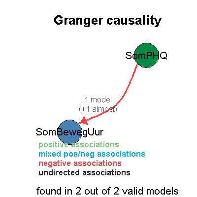
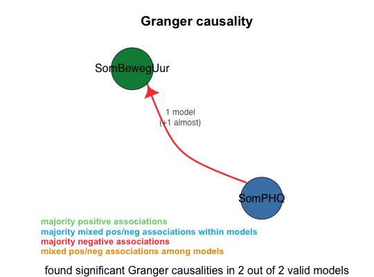

print_accepted_models(av_state)
av_state that was the result of a call to var_mainThis function prints the list of accepted models when av_state is the result of a call to var_main. The printed list of models is sorted by AIC+BIC score.
av_state <- load_file("../data/input/pp5 nieuw compleet.sav",log_level=3) av_state <- var_main(av_state,c('SomBewegUur','SomPHQ'),criterion="BIC",log_level=3)==================== var_main(av_state, vars = c("SomBewegUur", "SomPHQ"), log_level = 3, criterion = "BIC", numcores = 8L) Starting VAR (using 8 cores) with variables: SomBewegUur, SomPHQ ==================== Done. Processed 9 distinct models, of which 2 were valid. Tested 18 of 72 ( 25.00%) of the combinatorial search space at the given lags (1, 2).
Granger causality legend: + majority positive associations ~ majority mixed pos/neg associations within models - majority negative associations # mixed pos/neg associations among models Granger causality summary of all 8 unrestricted models: 100.00% SomPHQ -Granger causes- SomBewegUur (3 models +5 almost) (sign: 1 ~, 7 -) Granger causality summary of all 2 valid models: 100.00% SomPHQ -Granger causes- SomBewegUur (1 model +1 almost) (sign: 2 -) Granger causality summary of all 1 valid unrestricted models: 100.00% SomPHQ -Granger causes- SomBewegUur (1 almost) (sign: 1 -)
Summary of all valid models: lag: 100.00% 1 (2 models) apply_log_transform: 100.00% TRUE (2 models) The valid models (sorted by BIC score): A: (AIC: 386.23 (orig: 45.718), BIC: 398.593 (orig: 58.081)) : SomPHQ -Granger causes- SomBewegUur (0.0417) Lag: 1 Log transform: YES Exogenous variables: SomPHQ outliers (3.5x std. of res.): 27 Constraints: [lnSomBewegUur]lnSomBewegUur.l1 = 0 [lnSomPHQ]lnSomBewegUur.l1 = 0 Resulting Formulas: lnSomBewegUur = lnSomPHQ.l1 + const + SomPHQ_outliers lnSomPHQ = lnSomPHQ.l1 + const + SomPHQ_outliers B: (AIC: 388.391 (orig: 47.879), BIC: 404.875 (orig: 64.363)) : SomPHQ almost -Granger causes- SomBewegUur (0.0726) Lag: 1 Log transform: YES Exogenous variables: SomPHQ outliers (3.5x std. of res.): 27 Constraints: none# av_state is the result of a call to var_main print_accepted_models(av_state)[[1]] (AIC: 386.23 (orig: 45.718), BIC: 398.593 (orig: 58.081)) : SomPHQ -Granger causes- SomBewegUur (0.0417) apply_log_transform: TRUE exogenous_variables: 3.5x std of res. lnSomPHQ (obs.: 27) lag: 1 constraints: [lnSomBewegUur]lnSomBewegUur.l1 = 0 [lnSomPHQ]lnSomBewegUur.l1 = 0 [[2]] (AIC: 388.391 (orig: 47.879), BIC: 404.875 (orig: 64.363)) : SomPHQ almost -Granger causes- SomBewegUur (0.0726) apply_log_transform: TRUE exogenous_variables: 3.5x std of res. lnSomPHQ (obs.: 27) lag: 1